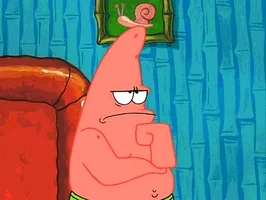
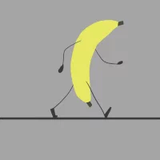
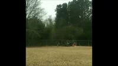

Whats ur Fate?

Walking through the park you see a fountain do you walk towards it?
You wak to the fountain and climb up to take a picture

You walk towards the playground
Looks like you fell.. The end
Random chicken appear and start chasin you... The End
